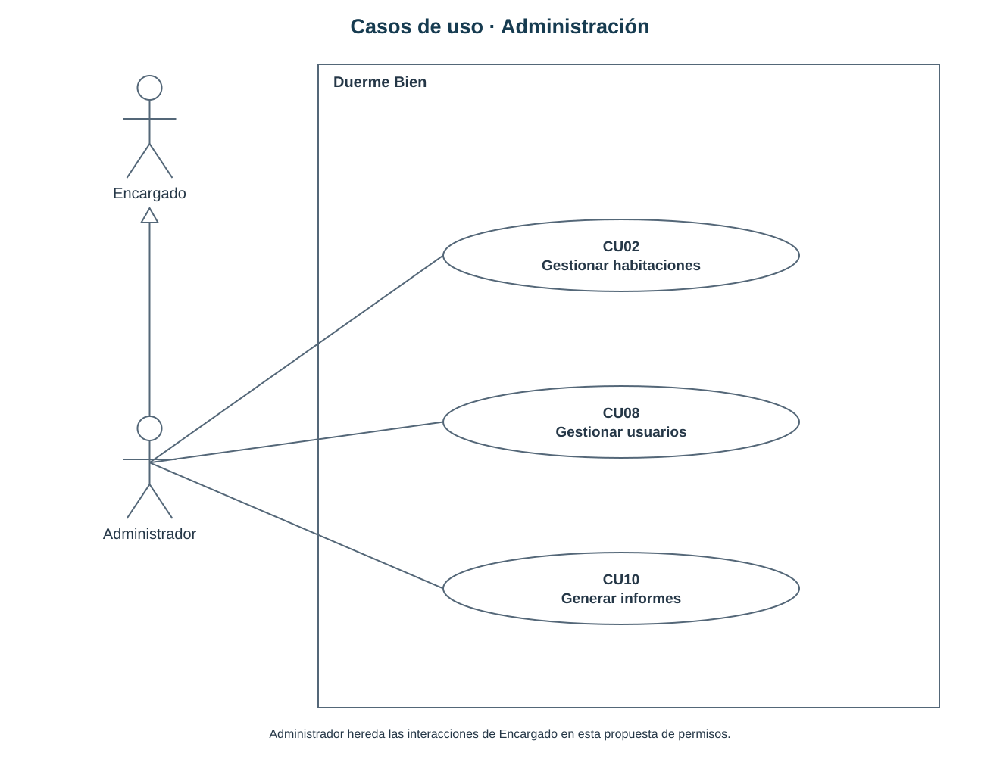
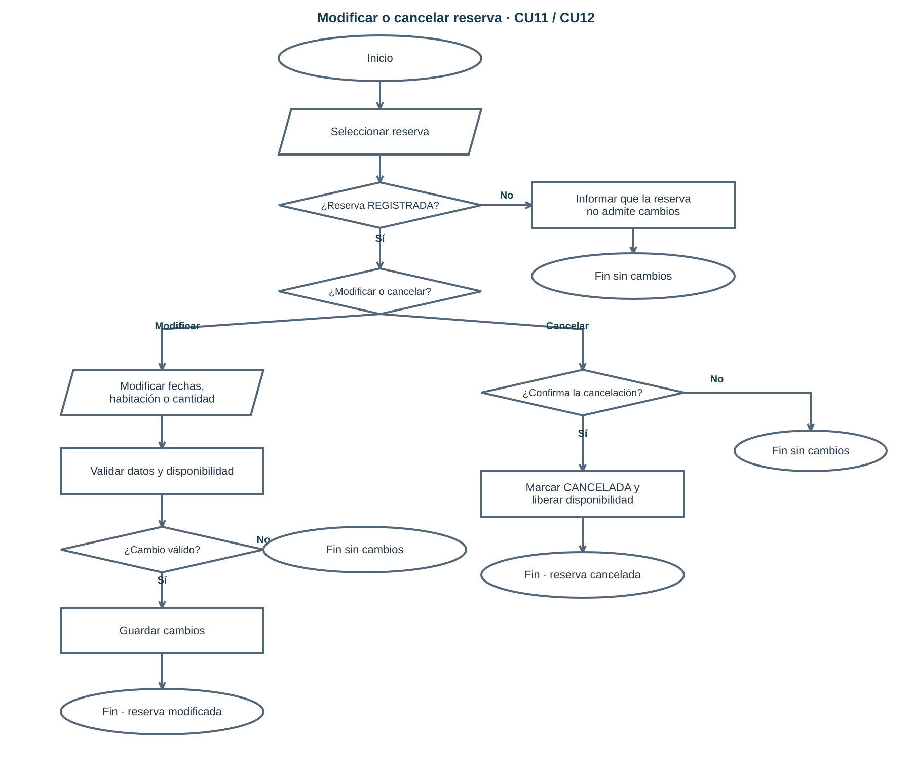
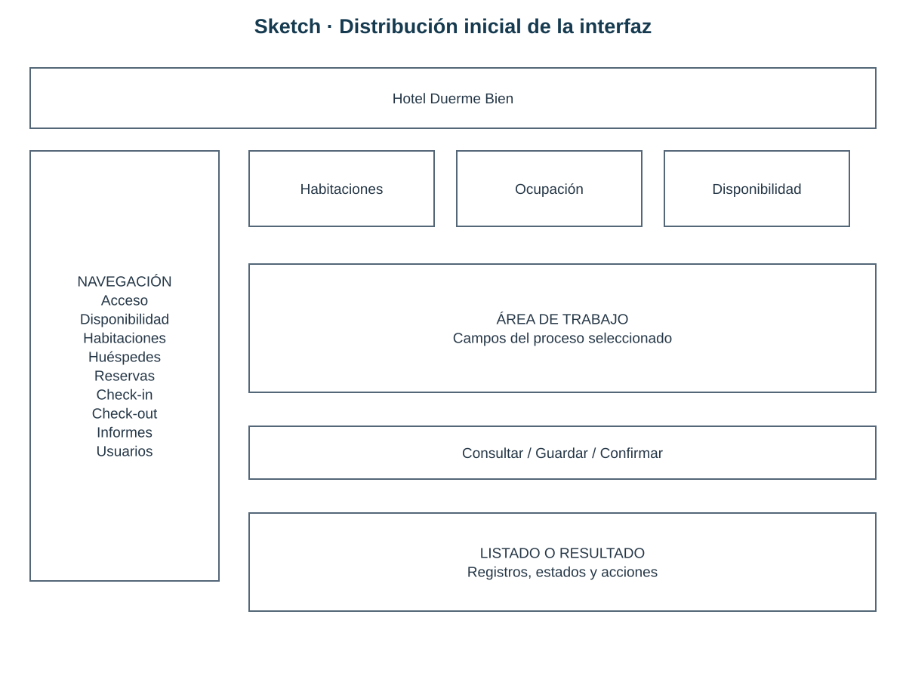

Sistema de Pasajeros - Hotel Duerme Bien
Tema 6 · Luis Huenchul
Casos de uso y procesos
Casos de uso · Operación

PDFEditar en diagrams.net
Casos de uso · Administración

PDFEditar en diagrams.net
Registro de reserva

PDFEditar en diagrams.net
Modificación y cancelación

PDFEditar en diagrams.net
Check-in

PDFEditar en diagrams.net
Check-out

PDFEditar en diagrams.net
Clases de dominio

PDFEditar en diagrams.net
Modelo lógico de base de datos

PDFEditar en diagrams.net
Sketch

Editar sketch
Wireframes y mockups
Abrir galería completaEditar todas las vistas
Reservas

Check-in

Informes

Usuarios

Prototipo funcional
Abrir prototipoEditar código
Kanban

Ver tareasEditar tablero
Materiales y referencias
Materiales originalesReferencias técnicasPruebas